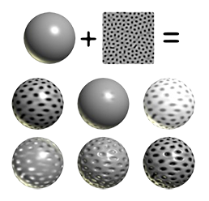

Presentation Draft 2
Speaker 0
“Hi everybody, we’re team 2D|!2D (maybe draw it on the board for good measure) and we’re here to present on texture mapping and filtering; specifically bilinear and trilinear interpolation, mip-maps, and anisotropic filtering. To start with, we have speaker 1 to give a quick breakdown of texture mapping before we move into more specific use cases
Speaker 1
Texture mapping, on a basic level, is a way to calculate color, shade, light, etc. for each pixel we by pasting images to our objects in order to create the illusion of realism. This allows us to have much more detailed graphics without having to sacrifice computation time. Something key to understand here is that we are mapping each point on the original texture (or texture coordinate system) to a point on the new image we’re trying to create. A good example of this would be if we’re trying to display a texture somewhere where the lighting in the environment rarely or never changes, we can precompute the texture so we don’t have to calculate individual bit values. Now, here’s Jason, to talk about linear interpolation and how it’s useful in texture filtering.

Jason
Interpolation is the estimation of a value based on other “nearby” values. It’s extremely useful in computer graphics because we can use it to choose how to both color and texturize a system of texels (we’ll get to that later) based on either a formula or a smaller resolution original map. To explain bilinear interpolation, let’s draw an example on the board. Say you have a pixel map and you want to increase the resolution of it, or “zoom in”, so to speak. To do this, we can define any new point we want to create based on the points around it. Here’s an equation, where u and v are dimensions to be mapped. where cij - top left c(i+1)j - top right ci(j+1) - bottom left c(i+1)(j+1) - bottom right u’ = unx - floor(unx) = the decimal portion of unx v’ = vnx - floor(vnx) = the decimal portion of vnx c(u, v) = (1−u’ )(1−v’ )cij+u’(1−v’ )c(i+1)j+(1−u’)v’ ci(j+1)+u’v’c(i+1)(j+1) 3D linear interpolation c(u, v, w) = (1 − u’ )(1 − v’ )(1 − w’ )cijk+u’ (1 − v’ )(1 − w’ )c(i+1)jk + . . .
c(u, v) = (1−u’ )(1−v’ )cij+u’(1−v’ )c(i+1)j+(1−u’)v’ ci(j+1)+u’v’c(i+1)(j+1)
Leslie
MIP (latin: “multum in parvo” aka many things in a small place) Maps! (or mipmaps)
What’s the problem with bilinear filtering? Recall that bilinear filtering rounds to the closest matching location in the source pixel grid for each destination pixel location, then it interpolates between 4 nearby pixel values. While this creates a smoother (but blurrier) aliasing effect, scaling an image to less than half its size results in some source pixels being skipped. (maybe talk about what happens when image is scaled to a single pixel - what color should the pixel be? Plus averaging all the colors is too expensive!) This creates noisier aliasing. So what method can we use to create smoother texture maps? We want image resolutions that are not too high due to aliasing effects but not too low due to a loss of detail. So what about images of varying resolutions depending on the distance between the object and viewpoint?
Let’s talk about mipmaps! A mipmap is a texture image that is shrunken down to a progressively smaller resolution. These images form a sequence of textures that help create smoother antialiasing and the illusions of depth and perspective in 2D texture mapping (see example images below). These images are precalculated, meaning the filtered detail is done before the image is fully rendered, removing artifacts and stray aliasing.
No mipmapping - noisy aliasing
with mipmapping - smoother aliasing
Each image in the mipmap is half the size of the previous image, thus decreasing by a power of 2. For example (talk about images):
- Original = 256x256
- Mip 1 = 128x128
- Mip 2 = 64x64
- Mip 3 = 32x32
- Mip 4 = 16x16
- Mip 5 = 8x8
- Mip 6 = 4x4
- Mip 7 = 2x2
- Mip 8 = 1x1
Images: mipmapping can contribute to creating spatial aliasing, as seen in these checkered images
Besides creating smoother anti-aliased images, what are some not-so-obvious perks of mipmaps? The first is that mipmaps do not take up much additional memory, in comparison to bilinear filtering, for instance. Mipmaps take up only ⅓ additional memory space due to the power of powers (¼ original size + 1/16 original size + 1/64 original size + … + 1/(4^n) = ⅓). Rendering times are also decreased because mipmap levels are easily cached instead of going back to main memory to render most destination pixels.
Sahar
As already mentioned, 2D Texture mapping is a technique where a 2D image is wrapped (or “mapped”) onto a 3D model. But that’s only the first step to the process! A 2D texture indeed becomes mapped onto the surface of a simple 3D geometric shape, such as a plane, cube, cylinder, and sphere but for a polygonal object, the next step involves a 3D texture (that is created in the first step) of the 2D texture being mapped to a simple geometric shape, to then be mapped onto the surface of an arbitrary shaped object [Reference1], which can be our 3D model, for example. This is known as a two-part mapping method [Reference1].
The above image is an example of this two-part mapping method, and how 2D texture mapping takes place onto a 3D model. These texture mapping images can be used to manipulate a variety of characteristics on a model’s surface like the displacement, bumpiness, transparency, color, and more. But let’s take it a step further. How do we actually go between a 2D image to a 3D object in our computer graphic space?
Well, in order to apply texture mapping to an object, we must implement texture mapping coordinates, and this is where UV mapping comes into play. Texture mapping coordinates in a texture space are represented as (U, V). For the above example, we talked about a polygonal object and how UV mapping is implemented in a two-part mapping method. But for a NURBS surface, it is a rectangular patch with UV coordinates so naturally its own UV coordinates are utilized for the texture mapping coordinates.
However, in instances for 3D modeling, a lot of thought has to come into play when accurately texture mapping from the 2D image to the 3D model. We know we utilize UV mapping to project a texture map onto a 3D object, but how does this work? The letters “U” and “V” actually denote the axes of the 2D texture as “X”, “Y”, and “Z” are already used to denote the axes of the 3D object in a modeling space [Reference2].
Above is an image of an object that has two checked sphere objects. The image on the left does not have UV mapping applied to it and the image on the right does have UV mapping applied.
As you can see, UV mapping is applied per face, not per vertex. This means a shared vertex can have different UV coordinates in each of its triangles, so adjacent triangles can be cut apart and positioned on different areas of the texture map.
The UV Mapping process at its simplest requires three steps: unwrapping the mesh, creating the texture, and applying the texture.
Justin
Hi guys, so you have already gotten the gist of filtering so far. But, I’m going to further that knowledge by talking about anisotropic filtering. The difference between anisotropic filtering from bilinear and trilinear filtering is in its name. Bilinear and trilinear filtering are isotropic, meaning that the filtering works the same in all directions. However, it is not always the case that we want filtering to work this way. For example, in many modern games the player usually views things that eventually fade out in the distance. If a game were to use bilinear or trilinear filtering methods to generate the graphics for the game, the image will end up looking blurry. Here is an image of just the case. To fix this the game requires a non-isotropic filtering pattern. Hence, we use anisotropic filtering. How it works is that it takes in textures and surfaces that are far away or at high angles and projects the textures as trapezoids or rectangles over squares. This process works on a base 2 level system: 2x, 4x, 8x, 16x. Anisotropic filtering can usually go up to 16x without harshly affecting the performance. Of course, if we had infinite processing power then textures using this filtering can be generated at much higher levels.
Will add more...